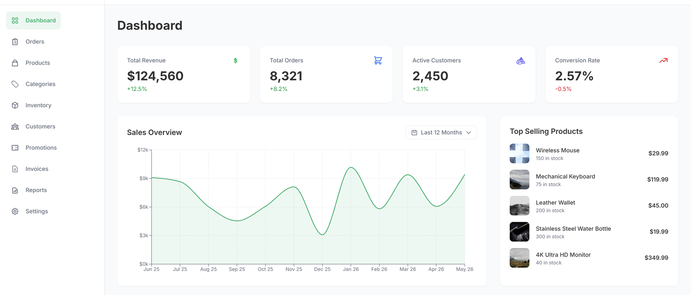
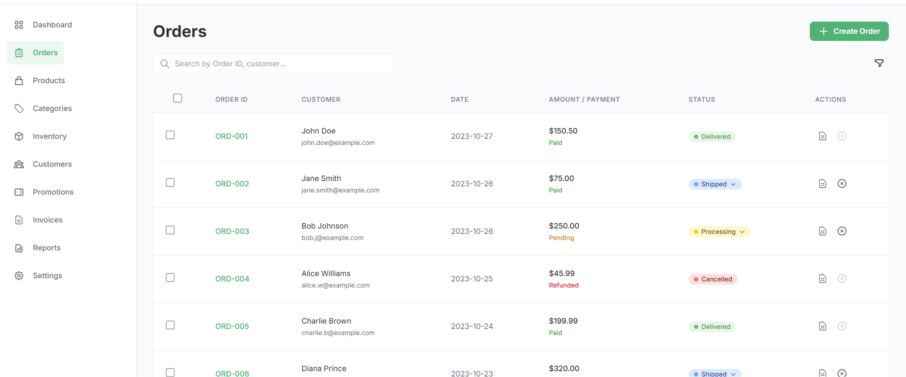
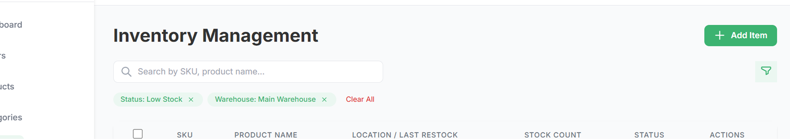
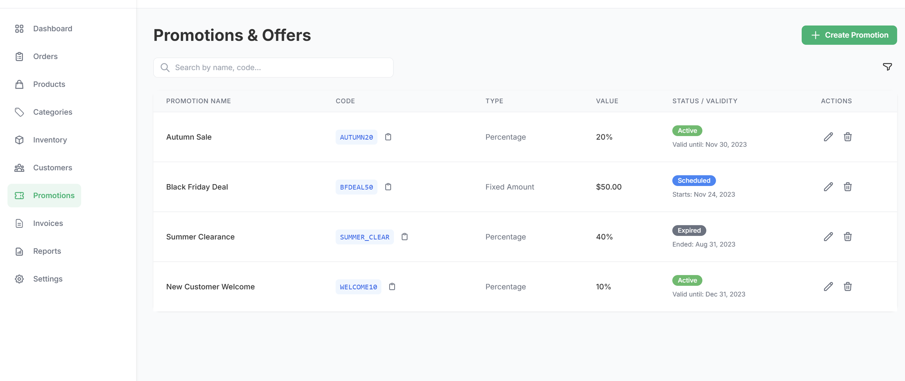
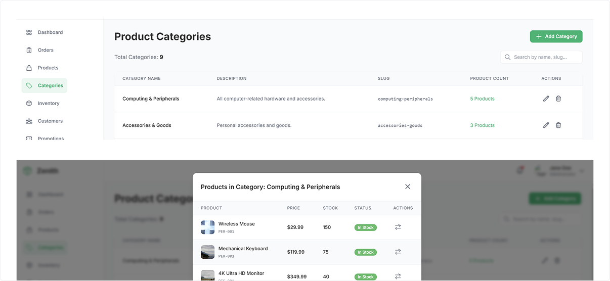
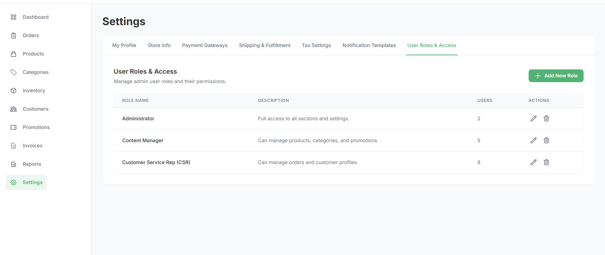

Case Study · AI · Product Design
Zenith — AI-Assisted E-commerce Admin Console
Designed an AI-assisted e-commerce admin experience that improves operational workflows while maintaining user control.
Problem
Admin operations needed AI assistance — without losing user control
E-commerce admin teams managing promotions, inventory, and operational decisions faced a growing challenge: AI assistance was available but poorly integrated into their workflows, creating friction rather than reducing it.
- Admin teams spent significant time on repetitive operational decisions
- AI tools tended to automate actions outright, removing user agency and trust
- Operators lacked confidence in AI recommendations without visible reasoning
- Context switching between manual tasks and AI outputs increased cognitive load
Key Insight“AI should assist operational workflows without removing user control or increasing cognitive load.”
Approach
Designing AI as a workflow collaborator, not a replacement
The design approach centered on integrating AI assistance at the right decision points in existing workflows — where operators needed support — while keeping users visibly in control at every step.
- Map where operators made the most manual decisions across core admin workflows
- Identify where AI assistance provides genuine value versus adds friction
- Design AI interactions that surface reasoning alongside recommendations
- Maintain explicit user confirmation for all consequential actions
AI Workflow Strategy
Two complementary tracks: structuring and execution
The strategy was structured around two tracks that together covered how AI assistance was integrated across the admin experience — from content structuring to operational execution.
01
Design Structuring Track
Focused on how AI helps operators structure content, promotions, and product configurations. AI surfaces recommendations based on historical data and business rules — operators review, modify, and confirm before anything is applied.
02
Execution Track
Focused on how AI assists with operational execution — scheduling, bulk actions, and workflow automation. Operators retain full visibility over what is running, with clear controls to pause, adjust, or override at any step.
Design Solution
AI assistance integrated into the workflow — not alongside it
The design solution brought AI suggestions directly into the existing operational interface. Operators see recommendations within their current context — with visible reasoning and confirmation steps before any action is applied.






Interaction Improvements Summary
Key changes that reduced friction and improved operator confidence
- AI recommendations displayed inline with supporting context — not in a separate panel
- Confidence indicators shown alongside AI suggestions to help operators calibrate trust
- One-click accept with full ability to modify before confirming any AI-generated action
- Non-destructive AI actions — all suggestions remain reviewable before execution
- Clear reasoning shown for each AI recommendation to support operator decision-making
What Didn’t Work
Early approach: a separate AI suggestions panel
- A separate AI panel created context switching between the main interface and AI output
- Operators ignored the panel when the connection to their current task was unclear
- High-confidence AI suggestions presented without reasoning reduced operator trust
- Auto-applying AI recommendations caused operators to disengage from verification steps
Outcome
A workflow model designed around user control
- AI recommendations were integrated directly into existing workflows rather than separated into another interface.
- Users retain the ability to review, modify, and confirm AI-generated actions.
- Visible reasoning and contextual guidance were used to make AI assistance easier to evaluate.
- Non-destructive interaction patterns keep users in control of consequential actions.
- The interaction model was extended across promotions, inventory, and operational workflows.
Key Takeaways
What this project reinforced
AI as a decision support layer, not a decision maker
→ Designing AI that enhances rather than replaces operator judgment supports more deliberate use of AI-generated recommendations
Visible reasoning builds operator trust
→ Showing the reasoning behind AI suggestions is as important as the suggestion itself — operators need to understand, not just accept
Integrate at the point of decision
→ AI assistance is most effective when surfaced within the existing workflow — a separate AI interface creates the context switching it is meant to eliminate